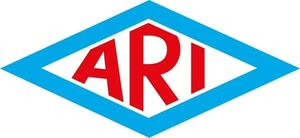

Trade Mark Journal No.2025/020 16 May 2025
WO0000001841939 (6,7,9,11,20,37,42)
Office of origin: Germany
Date of International Registration:7 December 2023
Date of designation in the UK:
7 December 2023

The mark contains the colours blue, red and white.
International priority date claimed: 7 June 2023
(Germany)
- Class 6
- Valves, fittings and butterfly valves made of metal (other than machine parts) for control, isolation, safety and steam trapping of liquid and gaseous media; steam traps [valves], manifolds as condensate collectors and distributors all made of metal for liquid and gaseous media (other than machine parts); strainers made of metal (other than machine parts and not for household purposes); systems and installations consisting of the aforementioned goods.
- Class 7
- Valves, fittings and butterfly valves for control, isolation, safety and steam trapping of liquid and gaseous media (as parts of machines and machine installations); steam traps, manifolds as condensate collectors and distributors (as parts of machines and machine installations); strainers (as parts of machines and machine installations); actuators and drives being machines or machine parts for the actuation of valves, fittings and butterfly valves; regulators (as parts of machines and machine installations); pneumatic controls and regulators for machines; systems and installations consisting of the aforementioned goods.
- Class 9
- Measuring, testing, detection and monitoring instruments and devices; electric regulating apparatus and electronic control apparatus; apparatus and instruments for measuring, metering, checking [supervision] and monitoring the flow of gases or liquids; electrical apparatus for controlling the flow of gases or liquids; electric, electronic and thermic controls and regulators; sensors; software and apps; systems and installations consisting of the aforementioned goods.
- Class 11
- Valves, fittings and butterfly valves for control, isolation, safety and steam trapping of liquid and gaseous media as parts of heating, steam generation, cooling, drying, ventilation, air-conditioning, water and energy processing installations; steam traps [valves] and manifolds as condensate collectors and distributors for liquid and gaseous media as parts of heating, steam generation, cooling, drying, ventilation, air-conditioning, water supply and energy processing installations; strainers as parts of heating, steam generation, cooling, drying, ventilation, air-conditioning, water supply and energy processing installations; energy conditioning installations for heating and cooling of liquid and gaseous media; steam and heat processing apparatus; industrial apparatus and installations for regulating pressure in supply lines for liquid and gaseous media; systems and installations consisting of the aforementioned goods.
- Class 20
- Plastic fittings (clips) for attachment to tubing; valves and butterfly valves of plastic, other than parts of machines, for control, isolation, safety and steam trapping of liquid and gaseous media; steam traps of plastic [valves], other than machine parts, for liquid and gaseous media; non-metal manifolds as condensate collectors and distributors for liquid and gaseous media being valves of plastic (other than machine parts); non-metal strainers for industrial applications other than machine parts; systems and installations consisting of the aforementioned goods.
- Class 37
- Installation, maintenance and repair of valves, fittings, butterfly valves, steam traps, manifolds as condensate collectors and distributors, strainers, actuators, drives, controls, regulators, and sensors, as well as regulating, measuring, testing, detection, control and monitoring instruments and devices as well as systems and installations consisting of the aforementioned goods.
- Class 42
- Design, development, programming, installation and maintenance of software and apps; Software as a Service [SaaS]; design, technical development and research relating to valves, fittings, butterfly valves, steam traps, manifolds as condensate collectors and distributors, strainers, actuators, drives, controls, regulators, and sensors, as well as regulating, measuring, testing, detection, control and monitoring instruments and devices as well as systems and installations consisting of the aforementioned goods.
ARI-Armaturen Albert Richter GmbH & Co. KG
Representative: Patent- und Rechtsanwälte Loesenbeck, Specht und Dantz, Am Zwinger 2, 33602 Bielefeld, GERMANY